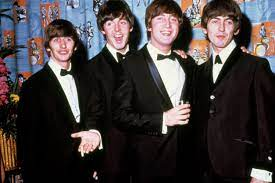
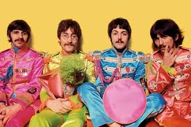
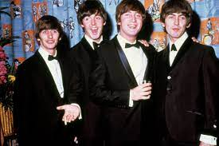
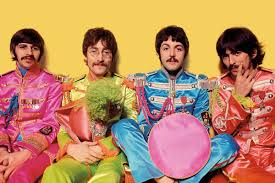

The Beatles
Grupo conocido en el mundo hispano como los Beatles, fue una banda de rock británica formada en Liverpool durante los años 1960, estando integrada desde 1962 a su separación en 1970.

La beatlemanía
Pese a la nula repercusión, la experiencia en Alemania había dado consistencia al grupo, aunque a principios de los 60 no parecía más que otra de las numerosas bandas que, desde el triunfo del rock and roll estadounidense a mediados de los 50, cultivaban con pasión este género en el Reino Unido, interpretando o versionando temas de Elvis Presley, Chuck Berry y otros grandes rockeros americanos. The Beatles, sin embargo, habían comenzado a componer e interpretar sus propias canciones, y gozaban ya de cierta fama; tocaban en pequeños clubes de Liverpool, como The Cavern (La Caverna), y eran conocidos en el área de Liverpool, pero todavía ningún sello discográfico había llamado a sus puertas.
La beatlemanía se extendió en 1964 a Estados Unidos, donde temas como Love me do, She loves you o I want to hold your hand, arropados por su primera gira en este país, alcanzaron el primer puesto en las listas de éxitos. El libro Guinness de los récords recoge un dato bien revelador: en un mismo mes, dos álbumes y cinco singles de The Beatles lideraron las respectivas listas estadounidenses. En lugar de, como era tradicional, irradiar su influencia musical por todo el mundo, los Estados Unidos sufrieron la llamada "Invasión británica", con el grupo de Liverpool como cabeza de puente de una serie de bandas (The Animals, The Who o los Rolling Stones) que también desembarcarían en el nuevo continente, destronando la supremacía del rock and roll americano.
 



Integrantes de Grupo
-
John Lennon
John Winston Ono Lennon (de nacimiento John Winston Lennon; Liverpool, 9 de octubre de 1940-Nueva York, 8 de diciembre de 1980) fue un músicomultiinstrumentista y compositor británico que saltó a la fama como uno de los miembros fundadores de The Beatles, reconocida como la banda más comercialmente exitosa y críticamente aclamada en la historia de la música popular. Junto con Paul McCartney, formó una de las parejas de compositores más exitosas del siglo xx.
-
Paul McCartney
James Paul McCartney (Liverpool, 18 de junio de 1942) es un cantautor, multiinstrumentista, y compositor británico. Junto a John Lennon, George Harrison y Ringo Starr, ganó fama mundial por ser el bajista de la banda de rock The Beatles, reconocida como la más popular e influyente en la historia de la música popular; suasociación compositora con Lennon es una de las más célebres del siglo xx. Después de la separación de la banda, continuó su carrera musical en solitario y formóWings con su primera esposa, Linda, y Denny Laine.
-
George Harrison
George Harrison (Liverpool, 25 de febrero de 1943-Los Ángeles, 29 de noviembre de 2001) fue un músico multiinstrumentista, compositor, cantante, productor musical y productor cinematográfico británico, integrante de la banda The Beatles. Aunque John Lennon y Paul McCartney fueron los principales compositores dentro del grupo, Harrison también incluyó composiciones propias en los discos de The Beatles, tales como "While My Guitar Gently Weeps", "Something" y "Here Comes the Sun".
-
Ringo Starr
Richard Starkey Jr. (Liverpool, Inglaterra, 7 de julio de 1940), más conocido como Ringo Starr, es un músico, cantante, compositor y actor británico que ganó fama mundial como baterista de la banda The Beatles. Antes de su unión a The Beatles, Starr fue miembro de otra banda de Liverpool, Rory Storm & The Hurricanes. En agosto de 1962, Starr sustituyó de forma permanente en la formación de The Beatles al baterista Pete Best. Además de tocar la batería, Starr participó como vocalista en varias canciones del grupo como "With a Little Help from My Friends", "Yellow Submarine" y "Act Naturally", entre otras, y figuró como compositor de las canciones "Don't Pass Me By" y "Octopus's Garden".
Discografía
| Año | Disco |
|---|---|
| 1970 | Let it Be |
| 1968 | Hey Jude |
| 1969 | Come Together |
| Album más vendido Rubber Soul | |
Discografía
https://www.thebeatles.comDiseñado por Christian Aarón Palacios Velazco
© Derechos Reservados 2022